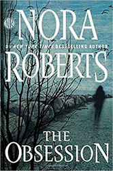
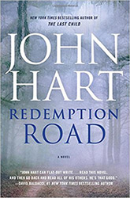

Deciding what to read next? You're in the right place!
If you love to read, one thing is for certain: if you only shop the "bestseller" lists, you're going to miss many of the best stories. That's why we work hard to bring you the latest well-written stories that make you feel you're part of the story by giving you thrills and tugging at your heartstrings. Books that are truly worth reading.
Book Of The Month - May
Naomi Bowes lost her innocence the night she followed her father into the woods. In freeing the girl trapped in the root cellar, Naomi revealed the horrible extent of her father's crimes and made him infamous.
Now a successful photographer living under the name Naomi Carson, she has found a place that calls to her, thousands of miles away from everything she's ever known. Naomi wants to embrace the solitude, but the residents of Sunrise Cove keep forcing her to open up, especially the determined Xander Keaton.
Naomi can feel her defenses failing, and knows that the connection her new life offers is something she's always secretly craved. But as she's learned time and again, her past is never more than a nightmare away.
Book Of The Month - April
A boy with a gun waits for the man who killed his mother.
A troubled detective confronts her past in the aftermath of a brutal shooting.
After thirteen years in prison, a good cop walks free as deep in the forest, on the altar of an abandoned church, a body cools in pale linen.
This is a town on the brink. This is Redemption Road. Brimming with tension, secrets, and betrayal, Redemption Road proves again that John Hart is a master of the literary thriller.
This month's book reviews are listed below.
Books recently reviewed in May: